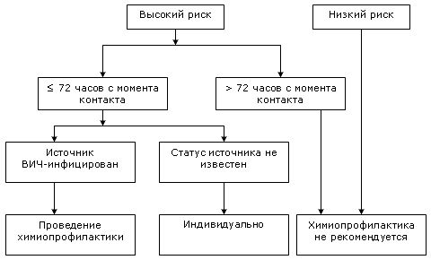

Согласно рекомендациям Центров по контролю и профилактике инфекционных заболеваний (СDC, США), химиопрофилактика при непрофессиональном заражении ВИЧ-инфекцией должна проводиться эффективными антиретровирусными препаратами в течение первых 72 ч с момента возможного инфицирования.
Первые рекомендации по химиопрофилактике ВИЧ-инфицирования при осуществлении профессиональной деятельности были опубликованы Центрами по контролю и профилактики инфекционных заболеваний (CDC, США) в 1991 г., когда единственным доступным антиретровирусным препаратом являлся зидовудин. Первое упоминание о возможности проведения химиопрофилактики при непрофессиональном заражении появилось в печати в 1998 г., однако в то время информации по данному вопросу было недостаточно для разработки рекомендаций. В ходе исследований, предпринятых в последующие годы, были получены чёткие доказательства того, что проведение антиретровирусной терапии в первые 48-72 ч с момента инфицирования с высокой степенью вероятности снижает риск непрофессионального заражения ВИЧ-инфекцией.
Под непрофессиональным заражением понимают любой прямой контакт слизистых, подкожный или внутривенный контакт с потенциально инфицированными биологическими жидкостями, за исключением перинатального и профессионального заражения (т.е работников сферы здравоохранения и санитарии, лиц, обеспечивающих общественную безопасность и сотрудников лабораторных учреждений).
К потенциально инфицированным биологическим жидкостям относят кровь, сперму, секрет влагалища и слизистой анальной области, грудное молоко и другие жидкости, контаминированные видимыми включениями крови.
Потенциальный риск заражения при различных видах контактов представлен в таблице:
| Вид контакта | Риск (на 10000 контактов) |
|---|
| Переливание крови | 9000 |
| Использование общей иглы | 67 |
| Рецептивная роль при анальном сексуальном контакте | 50 |
| Подкожный укол иглой | 30 |
| Рецептивная роль при гетеросексуальном контакте | 10 |
| Активная роль при анальном сексуальном контакте | 5 |
| Активная роль при гетеросексуальном контакте | 1 |
| Активная роль при орогенитальном контакте | 0,5 |
Ниже представлен алгоритм оценки степени риска инфицирования и химиопрофилактики ВИЧ-инфекции.
Проведение химиопрофилактики в течение первых 72 ч с момента заражения рекомендуется, если известно, что источник заражен ВИЧ, и воздействие было существенным. В случаях, когда ВИЧ-статус контактировавшего лица не известен, проведение химиопрофилактики не рекомендуется, однако за врачом оставляется право самостоятельной оценки степени риска в каждом конкретном случае. Если пациент обращается за медицинской помощью позднее 72 ч с момента контакта, химиопрофилактика также может быть назначена, если по мнению врача потенциальный положительный эффект её проведения превышает риск развития нежелательных лекарственных реакций.
Оценка уровня риска нередко вызывает затруднения. Целесообразным в таких ситуациях является проведение химиопрофилактики в предписанные сроки с последующей отменой, если при тщательном рассмотрении риск заражения оказался незначительным.
Высокий риск инфицирования:
Контакт слизистой влагалища, прямой кишки, глаза, полости рта и других слизистых, повреждённой кожи или подкожный контакт с кровью, спермой, секретом влагалища и прямой кишки, грудным молоком или другими биологическими жидкостями, контаминированными видимыми включениями крови, если известно, что источник ВИЧ-инфицирован.
Низкий риск инфицирования:
Контакт слизистой влагалища, прямой кишки, глаза, полости рта и других слизистых, повреждённой кожи или подкожный контакт с мочой, секретом слизистой полости носа, слюной, потом или слезами, не контаминированными видимыми включениями крови, при подозрении или если известно, что источник ВИЧ-инфицирован.
Алгоритм оценки степени риска инфицирования и химиопрофилактики ВИЧ-инфекции

Для химиопрофилактики ВИЧ-инфекции рекомендуется использовать один из приведенных ниже режимов:
- Эфавиренц + ламивудин или эмтрицитабин + зидовудин или тенофовир
- Лопинавир/ритонавир (Kaletra®) + ламивудин или эмтрицитабин + зидовудин
Терапия проводится в течение 28 дней.
Потенциальная тератогенность эфавиренца не позволяет применять его у беременных женщин. При назначении данного препарата женщинам детородного возраста они должны быть проинструктированы о необходимости использования контрацепции и нежелательности возникновения беременности.
CDC Antiretroviral postexposure prophylaxis after sexual, injection drug use, or other nonoccupational exposure to HIV in the United States.
MMWR 2005; 54(RR02):1-20.